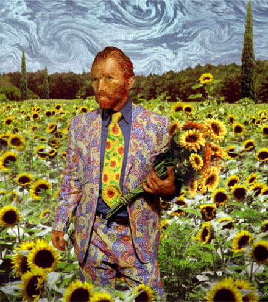

Όνειρο είναι ο άνθρωπος μιας κάποιας σκιάς.
Πίνδαρος
| |
Ποτέ να μη γκρεμίζεις τοίχους με το δικό σου κεφάλι.
Β. Χλάβατσεκ
| |
Η ψευδαίσθηση είναι η κορυφαία των απολαύσεων. | |
Η ελευθερία αγοράζεται με τα χρήματα που αρνιέσαι
Ida Olboni, Paolo Poli
| |
Πανηγύρι - γιορτή - λαχτάρα - ανάσα - ζωή.
Στη δική σου περιδίνηση υπάρχει κάποιο από αυτά η μόνο εσύ;
Ουσία;
Δεν έχεις καμία...
[download mp3: Περιδινηση] | |
O Πιο αδύναμος κρίκος μιας αλυσίδας είναι και ο πιο δυνατός της. Σε αυτόν σπάει η αλυσίδα.
Lec Stanislaw Jerzy
| |
Παρόλο που η ζωή συνεχώς ακριβαίνει, παραμένει εξαιρετικά δημοφιλής. | |
Αυτό που ακούγεται συχνότερα στα ερευνητικά εργαστήρια δεν είναι το «Εύρηκα». Αλλά το «Τι περίεργο πράγμα είναι αυτό;»
Arthur Clarke
| |
Τεμπελιά δεν είναι τίποτα περισσότερο από τη συνήθεια να ξεκουραστείς πριν κουραστείς.
G.F. Bowen
| |
It's about fucking time!
[download mp3: daybreak] | |
Οι lost bodies ανοίγουν το φεστιβάλ Αθηνών με μία Unpluged συναυλία στη πλατεία Εξαρχείων... | |
Το αύριο δεν είναι ίδιο με το σήμερα, σήμερα.
Antonio Porchia
| |
Νυχτερινό κυλάει το ποτάμι των ωρών
Από την πηγή του που είναι το αιώνιο αύριο.
Miguel de Unamuno | |
Η ατέλειωτη διαδοχή χρόνων, σε ένα συνεχώς επεκτεινόμενο, ζαλιστικό δίχτυ που αποτελείται από διαφορετικούς αντιθετικούς, συμπίπτοντες και παράλληλους χρόνους. Στο δίχτυ των διαφορετικών χρόνων, ο ένας πλησιάζει τον άλλον, σχίζεται, σπάει, αγνοεί τους υπόλοιπους για ολόκληρους αιώνες, καλύπτει όλες τις δυνατότητες του χρόνου.
Στους περισσότερους από αυτούς τους χρόνους δεν υπάρχουμε. Σε άλλους υπάρχετε εσείς, σε άλλους εγώ, σε άλλους εγώ και όχι εσείς και σε άλλους υπάρχουμε και οι δύο μας. Στον παρόντα χρόνο με την παραχώρηση πιθανόν κάποιας καλόγνωμης μοίρας, φτάνετε σπίτι μου και σας δέχομαι. Σε κάποιον άλλον χρόνο με βρίσκεται νεκρό την ώρα που περνάτε το κατώφλι. Ίσως σε κάποιον από αυτούς να είμαι εχθρός σας.
Χόρχε Λουίς Μπόρχες
| |
Λέξεις κινούνται, η μουσική κινείται
Μόνο μέσα στον χρόνο,
όμως μόνο αυτό που ζει, μόνο να πεθάνει μπορεί.
Οι λέξεις, μετά το λόγο, φθάνουν
Στη σιωπή.
Μόνο με τη μορφή, το σχέδιο,
Την ακινησία, όπως ένα Κινέζικο βάζο ακίνητο
Κινείται διαρκώς μέσα στην ακινησία του.
Όχι αυτή μονάχα, αλλά συνύπαρξη,
Ή πες ότι το τέλος προηγείται της αρχής,
Και η αρχή και το τέλος ήταν πάντα εκεί
Πριν από την αρχή και μετά το τέλος.
Και όλα είναι για πάντα τώρα.
Τ.S. Eliot
| |
Aδέρφια τελικά έγινε αλλαγή, και θα παίξουμε την Παρασκευή στις 12 το βράδυ και όχι το Σάββατο όπως είχε ανακοινωθεί.
| |

ΨΥΧΙΚΗ ΥΓΕΙΑ, ΔΙΚΑΙΩΜΑΤΑ ΚΑΙ ΚΟΙΝΩΝΙΚΗ ΧΕΙΡΑΦΕΤΗΣΗ
Σάββατο, 24 Μαϊου 2008, 9 πμ,
στο Πνευματικό Κέντρο του Δήμου Αθηναίων (Ακαδημίας 50)
και στη διαδήλωση προς τη Βουλή (1 μμ),
ΓΚΡΕΜΙΖΟΥΜΕ ΤΑ ΤΕΙΧΗ
ΤΟΥ ΑΠΟΚΛΕΙΣΜΟΥ
ΤΗΣ ΚΟΙΝΩΝΙΚΗΣ ΠΡΟΚΑΤΑΛΗΨΗΣ
ΤΗΣ ΚΡΑΤΙΚΗΣ ΑΔΙΑΦΟΡΙΑΣ
ΚΑΛΕΣΜΑ ΓΙΑ ΚΙΝΗΤΟΠΟΙΗΣΗ ΣΤΙΣ 24 ΜΑΗ 2008
Κραυγή αγωνίας, οργής και αγανάκτησης στο χώρο της ψυχικής υγείας από χιλιάδες «ασθενείς»-χρήστες των υπηρεσιών και τις οικογένειές τους, από το χώρο που διαρκώς διευρύνεται των «ευπαθών ομάδων» κάθε είδους, από τους μετανάστες και τους πρόσφυγες που υφίστανται τις ψυχολογικές συνέπειες του ξεριζωμού και των ρατσιστικών διακρίσεων, από τους απλήρωτους ή κακοπληρωμένους λειτουργούς της ψυχικής υγείας στον δημόσιο και τον ιδιωτικό τομέα.
-Ανυπαρξία και υπονόμευση της δημιουργίας εναλλακτικών στον εγκλεισμό κοινοτικών υπηρεσιών πρόληψης, φροντίδας και στήριξης. Μετά από 25 χρόνια «ψυχιατρικής μεταρρύθμισης», η επικρατούσα ψυχιατρική φροντίδα εξακολουθεί, κάτω από την ασφυκτική χειραγώγηση των φαρμακοβιομηχανιών, να λειτουργεί φυλακτικά και κατασταλτικά, πνίγοντας τις πολύπλοκες ανάγκες των πασχόντων στους κανόνες μιας κοινωνικής Τάξης ολοένα πιο άκαμπτης και δυσανεκτικής προς την όποια διαφορετικότητα. Συμπεριφορές μη αφομοιώσιμες τείνουν να ψυχιατρικοποιούνται. Εγκλεισμός, αποκλεισμός και στιγματισμός εξακολουθούν να είναι οι βασικοί πυλώνες του επικρατούντος ψυχιατρικού μοντέλου.
-Πλήρης απουσία ευκαιριών και θέσεων εργασίας για την ένταξη των ψυχικά πασχόντων και άλλων «ευπαθών ομάδων».
-Οικογένειες χωρίς καμιά υλική, κοινωνική και συναισθηματική στήριξη για ν΄ αντιμετωπίσουν τα πρόσθετα βάρη από την φροντίδα ενός πάσχοντος μέλους.
-Εκατοντάδες θέσεις εργαζομένων στις ψυχιατρικές μονάδες, νοσηλευτικού προσωπικού, γιατρών, κοινωνικών λειτουργών, ψυχολόγων, εργοθεραπευτών κλπ, μένουν κενές.
-Εκατοντάδες εργαζόμενοι, κυρίως στον ιδιωτικό «μη κερδοσκοπικό» τομέα, μένουν για μήνες απλήρωτοι και συχνά απολύονται όταν διεκδικούν τα δικαιώματά τους,
Οσο περισσότερο οι επιπτώσεις της οικονομικής και κοινωνικής κρίσης και οι πολιτικές του νεοφιλευθερισμού απεξαρθρώνουν τον κοινωνικό ιστό και βλάπτουν την ψυχική υγεία, σε σημείο που να προβλέπεται ότι ένας στους τέσσερις πολίτες θα αντιμετωπίσει σε κάποια στιγμή της ζωής του σοβαρό πρόβλημα ψυχικής υγείας, τόσο περισσότερο το σύστημα υπηρεσιών ψυχικής υγείας υποχρηματοδοτείται και σπρώχνεται στο δρόμο της εμπορευματοποίησης και της ιδιωτικοποίησης, της υποβάθμισης των παρεχόμενων υπηρεσιών και των επισφαλών σχέσεων εργασίας.
Αυτή η κατάσταση δεν μπορεί και δεν πρέπει να συνεχιστεί άλλο. Δεν αφορά μόνο τους άμεσα εμπλεκόμενους. Αφορά όλη την κοινωνία.
Ζητάμε:
-Διασφάλιση της δημόσιας, ίσης και δωρεάν παροχής υπηρεσιών ψυχικής υγείας, υψηλού ποιοτικού επιπέδου.
-Σεβασμό στο πρόσωπο του ψυχικά πάσχοντα και πλήρη διασφάλιση των ανθρώπινων και δημοκρατικών δικαιωμάτων του, στην πράξη και όχι στα λόγια.
-Προαγωγή της Αυτοβοήθειας και των εναλλακτικών τρόπων θεραπείας.
-Δίκτυο κοινοτικών υπηρεσιών ψυχικής υγείας, ολοκληρωμένων και προσιτών στους ασθενείς και στις οικογένειες, με δυνατότητα παροχής κατ΄ οίκον φροντίδας και με στόχο την πρόληψη, την έγκαιρη παρέμβαση και τη θεραπευτική συνέχεια. Διασφάλιση των προϋποθέσεων για ουσιαστική «ακρόαση», πρόληψη και αποκαστάσταση των πολύπλοκων
προβλημάτων ψυχικής υγείας των μεταναστών.
-Λήψη μέτρων για τη δραστική μείωση των αναγκαστικών νοσηλειών, οι οποίες θα πρέπει να είναι, πρωτίστως, στην αρμοδιότητα των υγειονομικών υπηρεσιών.
-Κατάργηση των περιοριστικών μέτρων, όπως οι μηχανικές καθηλώσεις και οι απομονώσεις. Διασφάλιση του ανοικτού χαρακτήρα των μονάδων ψυχιατρικής νοσηλείας και του πραγματικού σεβασμού των δικαιωμάτων των νοσηλευομένων.
-Εξασφάλιση θέσεων εργασίας με μέτρα όπως : η τήρηση του νόμου για το ποσοστό (που πρέπει ν΄ αυξηθεί) των ψυχικά πασχόντων για τις προσλήψεις στο Δημόσιο. Η παροχή κινήτρων για προσλήψεις στον ιδιωτικό τομέα. Η ουσιαστική χρηματοδότηση των ΚΟΙΣΠΕ από τον κρατικό προϋπολογισμό, ώστε να δημιουργήσουν επαρκείς, βιώσιμες και κανονικά αμειβόμενες θέσεις εργασίας, με ταυτόχρονη διασφάλιση της ουσιαστικής συμμετοχής και του ελέγχου της λειτουργίας τους από τα μέλη και τους εργαζόμενους.
-Ουσιαστική αύξηση του επιδόματος Πρόνοιας, το οποίο δεν θα πρέπει να διακόπτεται σε περίπτωση έναρξης εργασίας στο δημόσιο ή στον ιδιωτικό τομέα.
-Οικονομική υποστήριξη της οικογένειας. Ενσωμάτωση προγραμμάτων ψυχολογικής στήριξης των οικογενειών στις υπηρεσίες ψυχικής υγείας. Να μεταβιβάζεται η σύνταξη των γονέων, σε περίπτωση θανάτου τους, στα ψυχικά πάσχοντα παιδιά τους, χωρίς προϋποθέσεις.
-Αμεσες, επαρκείς σε αριθμό, προσλήψεις προσωπικού όλων των ειδικοτήτων σε όλες τις δημόσιες υπηρεσίες ψυχικής υγείας. Αύξηση των αποδοχών, διαρκής και ουσιαστική εκπαίδευση, χορήγηση ουσιαστικών κινήτρων.
-Εμπρακτη αναγνώριση από το κράτος των ευθυνών του για την εξασφάλιση της σταθερής καταβολής των αποδοχών του προσωπικού (επαρκούς, εκπαιδευμένου, με συμβάσεις αορίστου χρόνου) και της ποιότητας των υπηρεσιών στους χρήστες, στον «ιδιωτικό μη κερδοσκοπικό τομέα». Ελεγχος των υπηρεσιών σε όλα τα επίπεδα, με συμμετοχή εκλεγμένων εκπροσώπων χρηστών και εργαζομένων.
Καλούμε όλους, άτομα, ομάδες, συλλογικότητες και σωματεία χρηστών, οικογενειών, εργαζομένων στην ψυχική υγεία, στο δημόσιο και στον ιδιωτικό τομέα, προσφύγων και μεταναστών, σπουδαστών των σχολών επαγγελμάτων που εμπλέκονται στην ψυχική υγεία και καθένα που θέλει να αγωνιστεί για ένα αξιοπρεπές, ολοκληρωμένο και αποτελεσματικό σύστημα υπηρεσιών ψυχικής υγείας, να συμμετάσχουν στην εκδήλωση- συζήτηση, με θέμα:
«ΨΥΧΙΚΗ ΥΓΕΙΑ, ΔΙΚΑΙΩΜΑΤΑ ΚΑΙ ΚΟΙΝΩΝΙΚΗ ΧΕΙΡΑΦΕΤΗΣΗ»
Σάββατο, 24 Μαϊου 2008, 9 πμ,
στο Πνευματικό Κέντρο του Δήμου Αθηναίων (Ακαδημίας 50)
και στη διαδήλωση προς τη Βουλή (1 μμ),
Φτάνει πια.
Απαιτούμε λύσεις εδώ και τώρα.
«Ομάδα Αυτοβοήθειας Αθήνας», «Πανελλήνια Ομοσπονδία Συλλόγων Οικογενειών Ψυχικά Πασχόντων» (ΠΟΣΟΨΥ), «Κίνημα Αυτοβοήθειας Χρηστών Υπηρεσιών Ψυχικής Υγείας Χανίων», «Σωματείο Χρηστών Υπηρεσιών Ψυχικής Υγείας-Αυτοεκπροσώπηση», «Παγκρήτιος Σύλλογος Οικογενειών Ψυχική Υγείας», «ΚΟΙΣΠΕ ΤΟΨΥ Δωδεκανήσου» (Λέρος), «Τριμελής Επιτροπή Εργαζομένων στις ΘΕ.ΣΥ.ΜΟ Δρομοκαϊτείου», «ΚΟΙΣΠΕ ΤΟΨΥ Δυτικής Θεσσαλονίκης», «Πανελλαδική Συσπείρωση για την Ψυχιατρική Μεταρρύθμιση», «Σωματείο Εργαζομένων στο Περιβολάκι», «Σωματείο Εργαζομένων στις Κοινωνικές Υπηρεσίες Ιδιωτικών Φορέων», «Κίνηση Αδελφών Ατόμων με Προβλήματα Ψυχικής Υγείας», «Νέο Ξεκίνημα για την Υγεία», «18 Ανω», «Δ.Υ.Ψ.Α.»,«Σύλλογος για την προαγωγή της ψυχικής υγείας ‘Αλκυονίδες’» (ΨΝΑ), «Παρατηρητήριο για τα Δικαιώματα στο χώρο της Ψυχική Υγείας», «Εθελοντική Εργασία Αθήνας».
| |
Aδέρφια τελικά έγινε αλλαγή, και θα παίξουμε την Παρασκευή στις 12 το βράδυ και όχι το Σάββατο όπως είχε ανακοινωθεί.
| |
Το νόημα της ζωής είναι να βλέπεις.
Χουί Νέγκ (7ος αιώνας)
| |
Ένας πραγματικός εχθρός δεν σε εγκαταλείπει ποτέ.
Lec Stanislaw Jerzy
| |
Θυμάστε την εποχή του καθαρού αέρα και του βρώμικου sex ? | |
Τα λάθη που πρέπει να αποφεύγεις
είναι αυτά που σου στερούν τη δυνατότητα να ξαναδοκιμάσεις.
Lazar Goldberg
| |

Αν ο κόσμος δεν θέλει να έρθει
κανένας δεν μπορεί να τον εμποδίσει.
Sol Hurok
| |
Είναι δυνατόν να υπάρχουν άνθρωποι που πηγαίνουν σε μέρη που δεν έχει καυσαέριο που δεν έχει ψυχιατρεία, ανεργία, εγκληματικότητα, κορναρίσματα και να μιλάνε για πρωτόγονους λαούς ; | |
Το δηλητήριο διατηρείται καλύτερα σε ελαττωματικά βαρέλια.
Ida Omboni
| |
Ίδια τα αφεντικά,
δεξιά και αριστερά,
gay, straight και λεσβιακά.
| |
Τα τραγούδια των ιθαγενών της Αυστραλίας (Aboriginals)
Αυτή η σαύρα, με το ήρεμο σώμα,
κοιτάζει τα νερά της βροχής
να στροβιλίζονται φεύγοντας.
Αστέρια του ανατολικού ανέμου,
κωπηλατούν κατά πάνω στον ουρανό.
| |
Κοσμογονία (Aboriginals)
Οι πρώτοι που ζήσανε
εκείνοι του πολύ παλιού καιρού.
Οι πρώτοι, εκείνες τις ημέρες
την εποχή των ονείρων,
πηγαίναν απο τόπο σε τόπο
πριν έρθουν οι κατακλυσμοί.
Οι αρχαίοι δημιουργοί,
το πουλί, ο κάβουρας,
μαζί και ο πύθωνας των βράχων
και το καγκουρό,
μετέφεραν και σώριασαν στη γη
τους μεγάλους βράχους
Τους έριξαν στο βαθύ νερό
και σκάψαν τα ποτάμια.
Μίλησαν με εμάς
στα μέρη που έχουν σημαδέψει
και από τότε είναι μαζί μας στη γη.
Οι αρχαίοι δημιουργοί στείλανε τον κατακλυσμό
και το νερό τα πλημμύρισε όλα,
μα μέσα στα κύματα
ένας άνδρας και μία γυναίκα
πιάστηκαν από την ουρά
ενός καγκουρό που κολυμπούσε
και έφτασαν στους βράχους.
Και έτσι γεννηθήκαμε.
Και έτσι όλοι γεννιόμαστε.
| |
Μόλις κυκλοφόρησε από την “All together now”το “Suck my best of”.
Μια συλλογή με 26 μεγάλες αποτυχίες + το video clip του Νίκου Βελιώτη για το :“ Πάτερ Ζωσιμάς”.
Tο cd αυτό περιέχει κομμάτια και από τα 7 cd’s που έχουμε κυκλοφορήσει ως τα τώρα.
Οι lost bodies συνεπείς απέναντι στο κοινό τους και γνωρίζοντας την ανάγκη για την επανακυκλοφορία εξαντλημένων από χρόνια τραγουδιών τους αλλά και αφουγκράζοντας την συνεχώς αυξανόμενη ανάγκη της αγοράς για καινοτόμα και αποτελεσματικά προϊόντα, με την έκδοση αυτή έρχονται να καλύψουν το κενό που είχε δημιουργηθεί στην αγορά, με μια μνημειώδη έκδοση που θα συμπληρώσει τις εορταστικές εκδηλώσεις για τα 20 χρόνια του συγκροτήματος, οι οποίες θα συνεχιστούν για περίπου 3 χρόνια ακόμα.
| |
Το “Suck my best of” κυκλοφορεί ήδη με ιδιαίτερη επιτυχία στα καταστήματα και πολύ σύντομα αναμένεται να πιάσει στις πωλήσεις το πλαφόν των 37 cd’s που έχουμε βάλει ως στόχο για το 2008.
ΠΡΟΛΑΒΕΤΕ !!!!!!!!!!!!!!!!!!!!!!!!!!!!!!!!!
| |
|
35 readers online
|